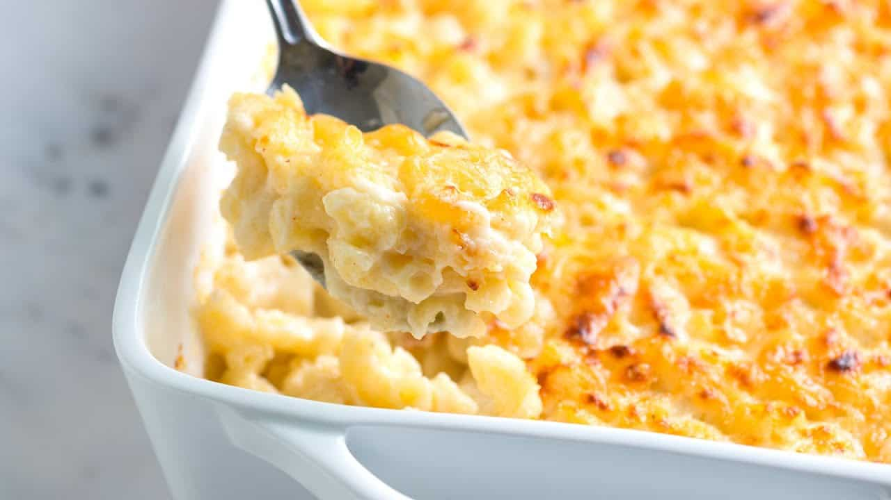

Mac & Cheese

Indulge in the creamy and comforting goodness of homemade macaroni and cheese. This classic dish is sure to satisfy your taste buds.
Ingredients:
- Elbow macaroni
- Butter
- All-purpose flour
- Milk
- Cheddar cheese, shredded
- Salt and pepper to taste
Steps:
- Cook the elbow macaroni according to package instructions until al dente, then drain and set aside.
- In a large saucepan, melt the butter over medium heat.
- Stir in the flour to create a roux and cook for a couple of minutes until it turns a light golden color.
- Gradually whisk in the milk until the mixture thickens and becomes smooth and creamy.
- Add the shredded cheddar cheese, stirring until it's fully melted and the sauce is well combined.
- Season the cheese sauce with salt and pepper to taste.
- Add the cooked macaroni to the cheese sauce and stir until the macaroni is evenly coated with the creamy cheese mixture.
- Serve your homemade mac & cheese hot and enjoy the rich and comforting flavor!
Return to main page